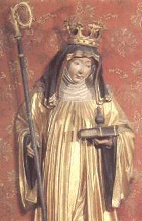

|  Saint Walburga | Most of us are well aware of the history of Christianity. Throughout the centuries nearing the end of and following the fall of the Roman Empire, Christians were most fervent and obsessive in converting non-Christians to their newly emerging so called "religion." The methods of conversion did not matter to them; whether this be mass murder, torture and brutality, which was often the case…to blatant lying and twisting the truth to suit their means.
Pagan peoples were especially persecuted by Christians. In researching the origins of "Walpurgisnight" one will find this feast of the celebration of spring, dates back long before the birth of the English born Catholic nun and Mother Superior, "Walburga." The mountain top celebrations of the evening of April 30th have survived from Viking days¹ where people lit huge bonfires and danced around them in the nude, having orgies and feasting, which lasted until dawn. |
Bonfires were lit to celebrate the ending of winter and orgies signified a fertility rite for plentiful mating and birth of the offspring of food animals. In Sweden, the celebrations on the night of April 30th were known as "The Feast of Valbörg."
The festivities of April 30th spread to the other countries of Europe. With the infestation of Christianity, the Feast of Valbörg was attacked, as it was Pagan. The bonfires, lit to celebrate the warmth and coming of spring were corrupted by Christians into warnings to frighten away "Demons" and "witches."
"Berg" a variation of "Börg" most castles [precise meaning of "Burg" and Börg] were built upon hills or mountain tops “berg” means "mountain" in both German and Swedish. "Valbörg" was converted to "Walpurga" to give the name Christian meaning. So who exactly IS Walburga? Walburga, aka Walpurga, Walpurgis; She is a CATHOLIC SAINT. "Walburga" was an English NUN. She served as a MISSIONARY in Germany. "St Boniface called on English monks and nuns to help convert the Germans. Walburga and her brother Winebald answered the call."² "She is believed to be a protector against black magick, witches, and Demons."³ "Walpurga is known as the saint who protects against magic."4 She died as "abbess of Heidenheim" in Württemberg and her relics were taken to Eichstätt. A liquid oozes from the rock beneath the shrine, known as "St. Walburga's oil," and is reputed to have curative powers.5
Obviously, this is not a Christian night, the name was used as an attempt to denigrate this celebration and turn it into something it is not and using this Christian alteration from the original is blasphemous.
_____________________________________________________________________
¹The Book of Festivals by Dorothy Gladys Spicer; page 310 ©1937
²Celebrations Around the World by Carole S. Angell; page 52
©1996
³A Calendar of Saints; the Lives of the Principal saints of the Christian Year by James Bentley; page 41
©1986
4Holiday Symbols 1998, edited by Sue Ellen Thompson; pages 514-515. ©1998
5The Book of Saints; a comprehensive biographical dictionary. Edited by Dom Basil Watkins, OSB on behalf of the Benedictine monks of St Augustine's Abbey, Ramsgate. Seventh edition; page 594 ©2002
Back to "The Eve of Beltane" Article